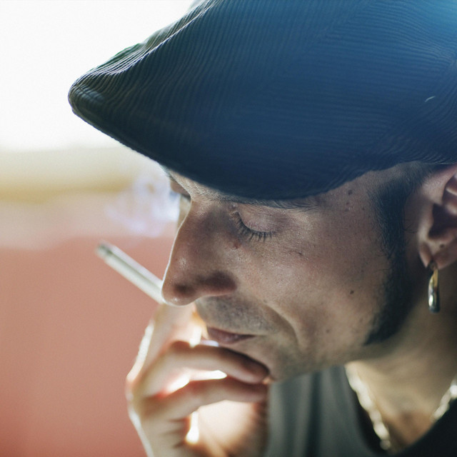

Historia

Fito y Fitipaldis es un grup musical espanyol liderat per Fito Cabrales, fundat a Vitoria el 1998, que combina rock, blues, funk i altres estils musicals.
Discografia
· Por la boca vive el pez (2006)
· Lo más lejos a tu lado (2003)
· Antes de que cuente diez (2009)
· Fitografía (2017)
Integrants

· Fito Cabrales
· Carlos Raya: guitarra
· Javier Alzola: saxofon i armonica
· Joserra Senperena: baix
· Daniel Griffin: bateria